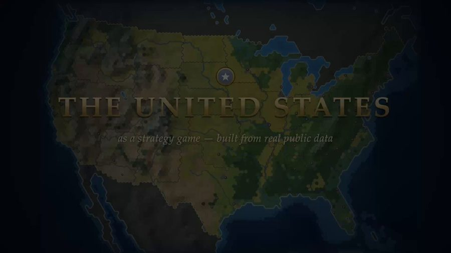

11 月 26 日 · 8 条选题
今日AI热点偏行业与创作玩法，工具实测类选题充足。
01美术生不是被AI干掉的
微博热搜话题「美术生不是被AI干掉的」引发讨论，核心争议是AI绘画会不会取代美术从业者，热度42万。
为什么火
AI绘画冲击就业是老焦虑，反方观点出现引发站队讨论，美术生群体共鸣强。
切入角度
- 实测3款AI绘画工具画同一张商稿，看它到底能不能替代美术生
- 美术生用AI做接单提效的真实工作流：草图到成稿怎么分工
- 普通人不懂美术也能用AI出图？3个零基础提示词模板
小红书标题
美术生别慌，AI抢不走这3件事
我用AI画了张商稿，美术生朋友笑了
适合：美术生、设计接单党、担心被AI替代的创作者
02纽约时报警告摄影师别更新Photoshop，因AI功能
纽约时报提醒摄影师不要因AI功能而升级Photoshop，相关报道在HN获259分、217条评论。
为什么火
专业用户对软件默认AI条款的隐私与版权担忧，摄影圈和设计圈都在讨论。
切入角度
- Photoshop的AI功能到底动了什么数据？普通用户该关哪些开关
- 不想被AI训练？修图党可用的3个替代方案对比
- 更新前必看：PS设置里这2个AI选项建议手动关闭
小红书标题
先别更新PS！这2个AI开关要关
摄影师都在劝退的PS更新，原因在这
适合：摄影爱好者、修图党、在意素材版权的普通用户
03ChatGPT上线Day Do Anything玩法
OpenAI官方发推宣传「Make a Day Do Anything with ChatGPT」，主打把普通一天做成电影感内容。
为什么火
官方亲自下场推玩法，门槛低、出片感强，适合普通人跟风玩。
切入角度
- 用ChatGPT把今天的日常写成电影分镜脚本，附提示词
- 3步做出「我的一天像电影」图文，手机就能完成
- 同一段生活素材，用ChatGPT生成3种风格的文案对比
小红书标题
用ChatGPT把普通一天拍成电影
这个ChatGPT新玩法，我先玩上了
适合：想玩AI创意的普通用户、内容创作者
04Karpathy用Claude做文明风格地图

Karpathy称让Claude抓取并解析大量美国公开数据，填充一张文明风格游戏地图，用的是Opus 5.5。
为什么火
大佬示范AI处理真实数据的玩法，普通用户看到「AI能替我干杂活」的可能性。
切入角度
- 不用写代码，让AI帮你把一堆公开数据整理成可视化表格
- 复刻思路：把Excel丢给AI，生成一张可玩的地图/图表
- 普通人版：用AI做一份家乡数据小地图，步骤拆解
小红书标题
大佬用AI做了张游戏地图，我复刻了
不会代码也能让AI整理数据，亲测
适合：想用AI处理数据的上班族、学生、AI玩法爱好者
05B站AI全民制作人系列持续霸榜
B站「AI全民制作人」系列多条视频上榜，其中白化棕熊前史214.8万播放，超长合集也有127.1万播放。
为什么火
AI生成动画内容成规模产出，普通人看到零团队做片的可能，播放量证明需求。
切入角度
- 拆解AI全民制作人一条视频的制作流程：脚本、分镜、生成、配音
- 普通人做AI短片的最小工具组合，预算和耗时实测
- 跟着热门AI动画学3个提示词，做出同款画面质感
小红书标题
B站爆火的AI动画，是这么做出来的
零基础做AI短片，我用了这4个工具
适合：想做AI视频的普通用户、短视频创作者
06谷歌杀回AI牌桌中央
知乎讨论被戏称「北美大豆包」的谷歌重回AI竞争中心，追问其逆袭的核心路径。
为什么火
大厂格局变化自带话题，普通用户关心「该用哪家AI」的实用选择。
切入角度
- 谷歌系AI工具实测：哪些免费好用、适合替代日常搜索
- 同一问题问谷歌和国产模型，输出对比给你看
- 普通用户该不该换主力AI工具？3个判断标准
小红书标题
谷歌AI翻身了？我实测了3个功能
别急着换AI，先看这份对比
适合：AI工具选择困难的普通用户、效率党
07梁文锋成全球最富AI模型创始人
微博热搜称梁文锋成为全球最富AI模型创始人，相关话题热度27万。
为什么火
国产AI创业者出圈，大众对国产模型实力和免费工具的好奇被点燃。
切入角度
- 他家的模型普通人怎么免费用？3个入口和适用场景
- 国产模型实测：写文案、做表格、改简历哪家强
- 从这条热搜聊起：普通人现在能用上的免费AI有哪些
小红书标题
这条热搜背后，有个免费AI能用
国产AI免费工具，我整理了3个
适合：想找免费AI工具的普通用户、职场人
08OpenAI测试Private Inference私有推理
Sam Altman称OpenAI正在小范围客户中测试Private Inference，属于OpenAI Private Intelligence的一部分。
为什么火
AI隐私是企业与个人共同痛点，官方新动作引发对数据安全的关注。
切入角度
- 普通人用AI聊天，哪些信息千万别输进去
- AI隐私设置自查清单：5个习惯降低泄露风险
- 企业级私有推理是什么？用大白话讲给非技术人
小红书标题
用AI聊天，这3类信息别发
AI隐私自查清单，建议收藏
适合：用AI处理工作资料的上班族、注重隐私用户